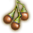
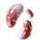
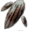
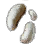
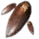
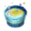

+
 Fruit of Destruction
1
🔗
+
How to Obtain
 Amanita Mushroom
Ancient Mushroom
 Dwarf Mushroom
 Ghost Mushroom
 Sky Mushroom
Gathering
Wild Herb (Behr)
+
Used In Recipe
🔗
 [Guild] Old Moon Magic Neutralizer
And More...